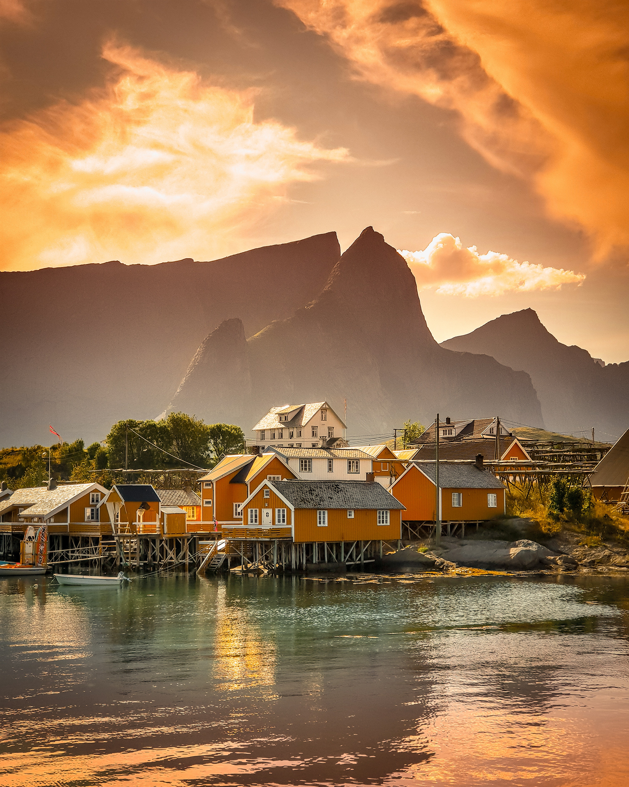
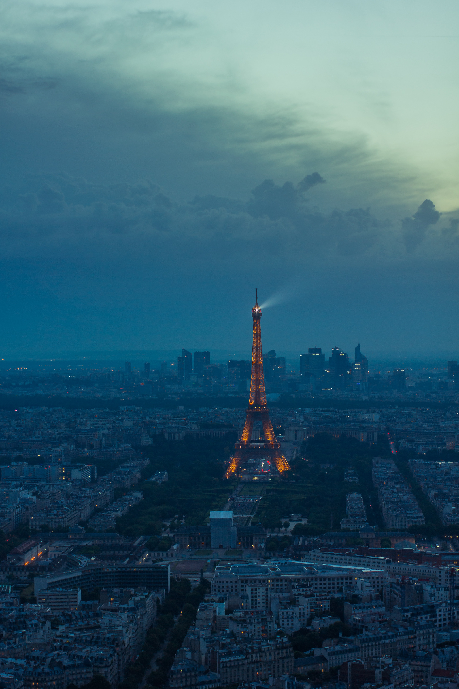

Gallery of our past travel destinations
UpNorth Travel
Home
About
Explore
Gallery
Contact
Florence, Italy 2019
Rio de Janeiro, Brazil 2019
Venice, Italy 2018

Oslo, Norway 2021
Lisbon, Portugal 2022
Prague, Czech Republic 2023
Budapest, Hungary 2023

Paris, France 2017
Athens, Greece 2020
Istanbul, Turkey 2016
Cairo, Egypt 2018
Dubrovnik, Croatia 2021
Split, Croatia 2023
Rome, Italy 2017
Albania
Morocco
Greece
Portugal
India
Japan
Russia
Mexico